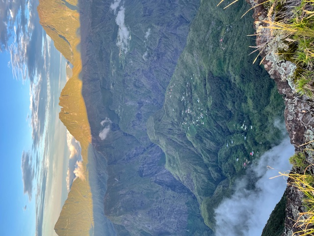

Le Piton Maïdo est un site emblématique de l'île de La Réunion, situé à environ 2 200 mètres d'altitude dans les Hauts de l'ouest. Ce belvédère spectaculaire offre une vue imprenable sur le cirque de Mafate, un des trois cirques naturels de l'île, accessible uniquement à pied ou en hélicoptère. Son paysage, composé de falaises vertigineuses et de végétation luxuriante, attire de nombreux visiteurs et randonneurs. Le Maïdo est également un lieu prisé pour admirer le lever du soleil, avec des panoramas souvent dégagés en début de journée. C'est un incontournable pour découvrir la beauté sauvage et préservée de La Réunion.

“Après avoir récupéré le camping-car à Saint-Paul, j'entame la montée vers le Piton Maïdo en début d’après-midi, parcourant les routes sinueuses des Hauts. La végétation change au fil de l'ascension, et l’air se rafraîchit agréablement. En arrivant à 18h, la lumière dorée du coucher de soleil illumine le cirque de Mafate, offrant un spectacle époustouflant. Je gare le camping-car et savoure ce moment unique, entouré de silence et de nature. Après un dîner sous un ciel étoilé, je passe une nuit paisible au sommet.”